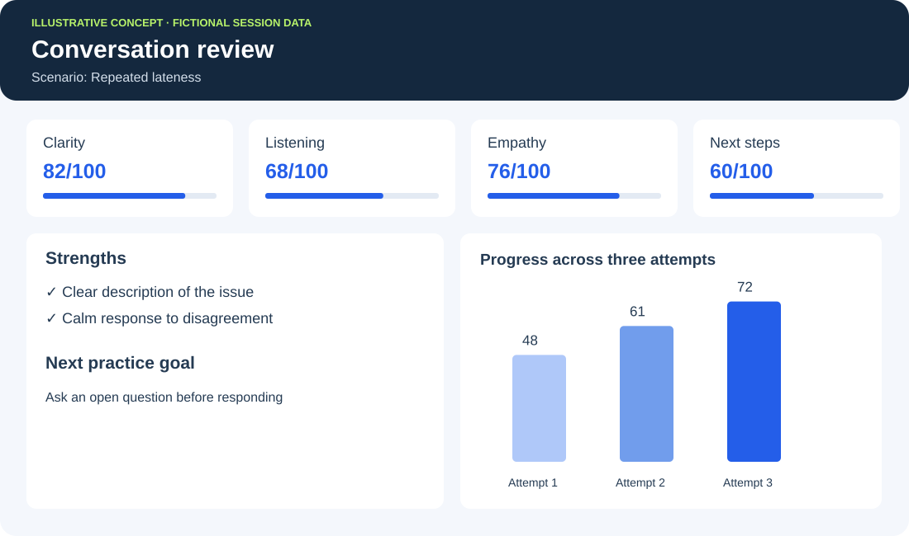

AI coaching
A voice-based coach that helps employees prepare for a difficult conversation, reflect on a decision and plan their next action. Guidance can be configured around company practices and role expectations.
PROJECT & WORKPLACE APPLICATIONS
AI coaching, role-play scenarios and conversation analytics.
I developed an AI tutor that learners can speak to. I integrated speech-to-text and text-to-speech APIs, shaped a warm and supportive teacher persona, and implemented a cycle of answer, personalised feedback and a revised attempt.

Coban, A., Dzsotjan, D., Küchemann, S., Durst, J., Kuhn, J., & Hoyer, C. (2025). AI support meets AR visualization for Alice and Bob: personalized learning based on individual ChatGPT feedback in an AR quantum cryptography experiment for physics lab courses. EPJ Quantum Technology, 12, Article 15.
DOI: 10.1140/epjqt/s40507-025-00310-zPROJECT VIDEO · 1 MIN 14 SEC
A short excerpt from the quantum physics education project, showing the AR application and an example of personalised AI interaction.
Supplementary video accompanying the published study, AI support meets AR visualization for Alice and Bob.
Open video in a separate tab ↗| Demonstrated in my project | Application in workplace learning |
|---|---|
| Spoken interaction | Voice conversations with an AI coach or practice partner |
| A defined teacher persona | AI characters with different roles, goals and response styles |
| Feedback on each learner’s answer | Role-specific evaluation followed by another practice attempt |
I’ve built the conversation and feedback foundation. I can adapt it into workplace coaching and role-play products by changing the scenario, AI role and assessment criteria.
A voice-based coach that helps employees prepare for a difficult conversation, reflect on a decision and plan their next action. Guidance can be configured around company practices and role expectations.
A library of practice conversations with AI characters: an angry customer, an employee who repeatedly arrives late, a new colleague or a buyer raising objections. Each scenario defines the context, character behaviour and desired outcome.
A post-session report with strengths, mistakes, missed opportunities and a focused next step. Conversation records and assessment rubrics support comparison across attempts and a dashboard of skill-development trends.
A manager practises addressing repeated lateness. The AI plays a defensive employee. Afterwards, the report evaluates clarity, listening, empathy and agreement on next steps. The manager repeats the conversation with a specific improvement goal.
PRODUCT CONCEPT · ILLUSTRATIVE PREVIEW
This preview continues the repeated-lateness scenario above. The avatar plays the employee. The dashboard illustrates a possible review of the same practice conversation.

The AI takes a defined role and responds to what you say. After the conversation, you receive feedback against the scenario criteria.
Illustrative avatar concept. This is not a live conversation interface.

Potential deliverables: Scenario library · AI character instructions · Voice interaction · Assessment rubrics · Feedback reports · Progress dashboard
Measure scenario performance and improvement across attempts. Where workplace data is available, test links to customer satisfaction or first-contact resolution.